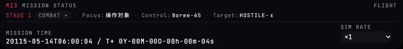
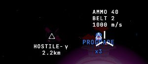

現行の戦闘ビューは、画面の四隅が情報で埋まる一方、撃つ判断に要る値(距離・接近・弾速・残弾)がばらばらの場所にある。
上部は 820×100px の2行ブロック、右レールは「艦 → ターゲット → 敵一覧」の順で、いちばん見たいターゲットが艦ステータスの下に押し下げられ、
敵一覧は画面の下端で切れている。照準のまわりは AMMO / BELT / 弾速の文字列と PROGRADE・×3 が重なって読めない。
この案は、戦闘中に問われる順に画面を組み直す。(1) 上部は1行のストリップ(ステージ・ビュー・時刻・時間加速・警報灯)。
(2) 右レールは 狙う相手(TGT)→ 敵(CNT)→ 艦(VSL)。(3) 艦ステータスは3つに割る — 計器は軌道・警報灯へ、弾薬は下中央の武装の帯へ、視点追従はカメラへ。
(4) 撃つ判断に要る3つ(距離・接近・弾速)は照準の右に置く。
上のツールバーの「比較」で、同じ位置関係の現行と見比べられる。

STAGE1
COMBAT ▾
20115-05-14 06:00:04
T+00:00:04
×1×4▾
CAUTIONWARNING
⟲ 視点リセット
NAVターゲット固定: HOSTILE-ε
420.00km高度
7.66km/s速度
遠地点 AP420.05km
近地点 PE419.95km
傾斜角 INC97.00°
周期 PRD01:32:58
環境
動圧 Q0.00kPa
船体温度 T311K
基準
自動地球月航法ターゲット
軌道分析
クォータニオン操作
RCS 姿勢に追従G
⌖HOSTILE-εターゲット
距離60.00km
接近速度0.0m/s
相対速度67.6m/s
装甲11/ 11
ターゲット選択T
右クリックでプロパティ(軌道要素)
△HOSTILE-α1.40 km隣接
△HOSTILE-γ2.21 km
△HOSTILE-β3.77 km
△HOSTILE-δ12.30 km
△HOSTILE-ε60.00 km固定
RCS 燃料1000/ 1000
並進出力中20.0 m/s²1–4
モード
RCS 制動ONP
微調整OFFV
進行方向ホールドONC
進行方向へ向けるF
展開部品
パドル
左7
右8
放熱板
左9
右0
放熱板 右 損耗100%
△HOSTILE-γ
2.2km
ε 60 km
α 1.4 km
2.2km
弾
40/ 40
予備2連
装填R
- 上部を 40px・1行のストリップへ。現行の 820×100px・2行ブロック(「MISSION STATUS」「FLIGHT」「MISSION TIME」「SIM RATE」の見出し付き)をやめ、 ステージ・ビュー切替・時刻・時間加速・警報灯だけを一列に置く。見出しは値そのものが語るので持たない(監査 5)。タイトル・Focus/Control/Target の3欄は外す — Control は VSL の見出し、Target は TGT に既にある。Focus は操作対象と違うときだけ「◎ 月」のように出す。 src/game/hud/hud-root.ts(buildTopBar) ・ src/game/hud/panels/top-bar.ts ・ src/game/hud/view-badge.ts ・ src/game/hud/style/skeleton-style.ts(#hud-topbar) ・ combat-view-style.ts ・ SPEC UI-DESIGN §8「全体ステータスバー」(2行バッジ→1行)
- 時刻は日時と T+ を短く。「20115-05-14T06:00:04 / T+ 0Y-00M-00D-00h-00m-04s」を「日時 T+ 00:00:04」へ。経過の年・月・日は0のあいだ省き、0でなくなった桁から出す。ストリップの幅を 800px 前後に保つための変更(監査 5)。 自動ワープ中だけ、末尾に「NODE WARP 残り」のチップが現れる(現行の gs-metric の hidden 切替と同じ条件)。 src/hud/utils.ts(fmtElapsedUnits の桁省略) ・ src/game/hud/panels/top-bar.ts(met / node-warp-remain) ・ SPEC GAME.md の時刻表記があれば更新
- 時間加速は段のボタン列。現行のプルダウン(「SIM RATE」見出し付き)を、いまの段を「面」で示す列へ。戦闘で射撃・推進が効くのは ×4 まで(
MAX_PHYS_SIM_SPEED)なので、戦闘で押す段は ×1・×4 の2つ、残り12段は「▾」から選ぶ。 ×16 以上にしているあいだは、いまの段が列に加わり、警報灯の帯(.ix-alert)で「射撃・推進は停止中」を出す。主役色の On 表示は使わない(監査 1)。 実装は新部品を作らず、既存の SegmentedControl ウィジェットと Pulldown を並べる。.ix-warpはその見た目。 src/game/hud/panels/top-bar.ts(Pulldown → SegmentedControl + Pulldown) ・ src/hud/widgets/segmented-control.ts ・ src/game/dynamic/sim-speed-manager.ts(SIM_SPEED_LEVELS, canShipAct) - 警報は上部の警報灯1か所へ集める。FUEL(燃料 20% 未満)・Q(動圧が上限の半分超)・TEMP(船体温度が上限の 70% 超)・ALT(降下警告)・AMMO(予備弾 ≤1 で注意、弾切れで警告)を判定し、上部には CAUTION / WARNING の2灯と件数だけを出す(どの項目かは警報帯と行内の △/▲ が示す。体系は 05)。
平常は暗い灯、注意は黄の灯+△、警告は赤の点滅灯+▲(下の部品比較)。現行は各行の値を赤くして警告を散らしており、満タンの燃料(監査 1)も弾薬 40/40(
mags < 4が赤になる)も警告色だった。 判定はいまのui-dangerの条件をそのまま使い、行側は閾値を越えたときだけ △/▲ を値に付ける(2か所に出るが、灯は「どこかが悪い」、行は「どこが悪い」)。 弾薬の注意の閾値はmags < 4からmags ≤ 1へ緩める(要判断)。 src/game/hud/panels/top-bar.ts(灯の同期を追加) ・ orbit/orbit-panel.ts と panels/vessel-panel.ts(ui-danger の付与元) ・ style/skeleton-style.ts(#hud .ui-danger) ・ SPEC UI-DESIGN §2「警告色」§8 - ORB は「いまどこを飛んでいるか」だけ。高度と速度を同じ大きさの主読み値に、AP・PE・INC・PRD は行へ、動圧と船体温度は細い中立のメーター(閾値の目盛りつき)へ。 見出し記号と基準セグメントの選択以外に主役色を使わない(監査 1)。基準の切替は既存のボタン列(.w-group)のまま。 VSL にあった動圧の行は ORB と重複していたので VSL から外した(監査 7)。 src/game/hud/orbit/orbit-panel.ts ・ style/combat-panel-rows-style.ts(#hud-orbit …) ・ SPEC UI-DESIGN §8「軌道情報」(変更なし)
- 視点の追従は CAM へ。現行は VSL に「視点RCS追従 G: On」の行と「視点追従 [G]」ボタンが二重にあった。視点の回し方はカメラの責務なので(SPEC §8「カメラ」)、CAM に1つのトグルとして置く。 トグルは「設定して放っておく値」、ピップは「飛行中に見る状態」と使い分ける(監査 4)。 src/game/hud/frame/combat-camera-panel.ts(行を追加) ・ panels/vessel-panel.ts(camfollow 行と followButton を削除) ・ SPEC UI-DESIGN §8「カメラ」(変更なし)
- 右レールの先頭は TGT。戦闘中に最初に問われるのは「いま狙っている相手を撃てるか」。TGT は、識別行(ターゲット色の面)→ 距離・接近・相対・装甲の行 → 選択キー。 「装甲」のラベルが縦に折れていた(監査 2)のは、メーターが幅を取りすぎていたため。行の文法(ラベルは省略記号、値は切らない)で解く。 縁の主役色の線はやめ、見出しの記号と識別行だけを第二色にする。ボタンを持つ「ターゲット選択 T」は VSL から TGT へ移した(ターゲットの操作はターゲットの側)。 src/game/hud/panels/target-panel.ts ・ hud-root.ts(右レールの生成順: rightRail に hud-target を先に追加) ・ style/combat-view-style.ts(#hud-target …) ・ style/combat-panel-rows-style.ts(#hud[data-attention="engagement"] #hud-target の主役色の縁を削除) ・ SPEC §8「ターゲット情報」(変更なし)
- CNT は2番目。画面下で切れない。現行は VSL の下に押し下げられて3行目で切れていた。距離順は SPEC のまま、行は [記号][名前][距離][役割] で、役割は「隣接」(注意色)「固定」(ターゲット色の面)。連番「01」は記号 △ に替える(世界の敵マーカーと同じ形)。 src/game/hud/panels/enemies-panel.ts ・ style/combat-view-style.ts(#hud-enemies .contact-row) ・ SPEC §8「敵一覧」(変更なし)
- VSL は「艦はどう構えているか」だけ(監査 7)。現行の1枚には、計器・モード・弾薬・展開部品・操作ボタン4つ・タッチ用推力段が同居していた。これを次のように割る。
・残す: RCS 燃料、並進出力、モード3つ(制動・微調整・進行方向ホールド)、進行方向リセット、展開部品。
・動圧 → ORB(重複)。弾薬・装填 → 武装の帯(注 11)。視点追従 → CAM(注 6)。ターゲット選択 → TGT(注 7)。
・タッチ用の推力段(1–4)は従来どおりbody.touch-ui-activeのときだけ並進出力の下に出す。 モードは「ラベル+キー・ピップ・」の3行で、On/Off を文字の色で示す行・トグル・点灯ボタンの混在(監査 4)をなくす。ショートカットはすべて右端のキーキャップ1種(監査 3)。 部品ごとの作り込みは 04-panels。 src/game/hud/panels/vessel-panel.ts(buildActionButtons を分割、syncState を pip へ) ・ hud-root.ts(#hud-vessel-status のマークアップ) ・ style/combat-panel-rows-style.ts(#hud-vessel-status …) ・ SPEC UI-DESIGN §8「艦のステータス」(「切り替えの現在値と直に操作するボタン」は保てる。弾薬・動圧を持たない旨を足す) - 展開部品は「ラベル+左右2つの面」。現行は「パドル左[7] 展開 / 放熱板右[0] 収納 / 損耗100%」を4つの長い文のボタンに押し込み、右下の2つは折り返していた(監査 2・3)。 左右のボタンはピップ(● 展開 / ○ 収納)とキー1つだけにし、損耗は損耗のある板があるときだけ独立の行(▲ 警告)に出す。点灯ボタンの主役色の塗りは使わない(監査 1)。 src/game/hud/panels/vessel-panel.ts(syncDeployButton: label を分割、wear の行を追加) ・ style/combat-panel-rows-style.ts(.vessel-deploy-btn)
- 武装は下中央の帯へ。弾帯(40発をセルで)・残弾「40 / 40」・予備弾倉「2連」・装填キー。現行は VSL の1行(40/40 +2連)と照準上の文字列と「装填 [R]」ボタンに分散していた。
リロード中は帯の内容を「RELOADING」の語1つ+進行に替える(
fmtAmmoStatusの分岐をそのまま使う)。残弾が少ないときは弾帯のセルが注意色に(.ix-belt.is-caution)。機関砲を持たない操作対象では帯ごと出さない。 src/game/hud/ammo-status.ts ・ panels/vessel-panel.ts(ammo の sync を帯へ移す) ・ hud-root.ts(帯の生成。置き場は④画面固定バッジ) ・ SPEC UI-DESIGN §5/§8(武装の帯を画面固定バッジに足す) - 撃つ判断に要る3つを照準の右へ(監査 6)。距離・接近・弾速を、照準のすぐ右に1行ずつ。距離と接近はターゲット色、弾速は中立。値の出どころは TGT と同じ(同じ view-model の読み取り)で、右レールまで目を動かさずに撃てるようにするための意図的な二重表示。
ロックが無いときは距離・接近の行を畳み、弾速だけ残す。判断が要る点: SPEC §8 は「撃つ判断に要る値は TGT に出す」と書くので、TGT を残すか距離・接近を TGT から外すかは決めてほしい(この案は残している)。
src/game/marker/player-markers.ts(boresight: label の文字列を .ix-cluster のマークアップへ。
markup: trueは既にある) ・ SPEC MARKERS.md(ボアサイトのラベル) ・ UI-DESIGN §8 - 方向マーカーは記号だけ。×N は記号の角のバッジ(監査 6)。PROGRADE・RETROGRADE など6方向は、名前のラベルを常時出さず記号だけにする(名前はヘルプとツールチップ)。ボアサイトと PROGRADE が重なる機首方向の定常状態で、文字が衝突するのが現行の主因。
近接まとめの「×3」は、代表の記号の下ではなく右上の小バッジにして、照準と文字が重ならないようにする。
画面外の対象は画面端の矢印(.ix-edge)。ターゲットだけ第二色、ほかの敵は中立で、距離つきの短いラベルを添える。
src/game/marker/player-markers.ts(pushOrbitAxes の label を空に) ・ src/game/marker/grouped-markers.ts(label: count ≥ 3 の
x${count}をバッジ化、BearingMarker の色) ・ SPEC MARKERS.md(「×N の件数表示」「方向マーカーのラベル」) - 画面角のボタンは中立の円。左右レールの開閉(◀ ▶)とヘルプ(?)は、主役色の赤字・枠付きバッジをやめ、同じ 24px の中立の円形ボタン(.w-btn--icon)に揃える。SPEC §5 のとおり、ヘルプは右レールのトグルと同寸・同じ上下位置の隣にあり、互いの領域を重ねない(監査 1)。 src/game/hud/style/skeleton-style.ts(.rail-toggle, #hud-help-badge) ・ hud-root.ts(buildHelpBadge: HLP の記号を外す) ・ SPEC UI-DESIGN §5(寸法・位置は変更なし)
A部品の比較 — 上部ストリップ
現行は2行・820×100px。改修案は1行・40px で、同じ情報(ステージ・ビュー・時刻・時間加速)に警報灯が加わる。下は3つの状態。
現行820×100px(切り抜き)

改修案800×40px・平常 / 注意 / 警告
平常(いま) — 灯はすべて消灯
STAGE1COMBAT ▾
20115-05-14 06:00:04T+00:00:04
×1×4▾
CAUTIONWARNING
注意 — 予備弾が尽きかけ、時間加速を ×16 に上げた
STAGE1COMBAT ▾
20115-05-14 06:20:31T+20:31
×1×4×16▾
CAUTION1WARNING
CAUTIONWARP×16 のあいだ、射撃と推進は停止します,×4 へ戻す確認B
警告 — 船体温度が上限の 70% を越えた
STAGE1COMBAT ▾
20115-05-14 06:03:12T+03:12
×1×4▾
CAUTIONWARNING1
WARNINGTEMP船体温度 940 K — 上限の 70% を越えた90放熱板を展開確認B
B部品の比較 — 照準まわり
現行は AMMO / BELT / 弾速の3行、PROGRADE、×3 が同じ場所に重なる。改修案は、記号3つ(ボアサイト・プログレード・近接した敵のまとまり)を縦に離し、文字は右に、撃つ判断の3値だけに絞る。
現行切り抜き

改修案同じ位置関係
△HOSTILE-γ
2.2km
2.2km
C改修の手順
- 色の割り当てを直す(CSS だけ)。見出し記号・メーターの塗り・点灯ボタン・レール開閉・HLP から主役色を外し、
ui-dangerを満タン値に付けない。ここまでで監査 1 が解ける。style/skeleton-style.tscombat-view-style.tscombat-panel-rows-style.ts。 - 行の文法と値の切れ(監査 2・3・4)。各パネルの行を
.ix-rowへ、ショートカットを.keyへ、On/Off をピップへ。パネルの順序は変えない。vessel-panel.tsorbit-panel.tstarget-panel.tsenemies-panel.ts。 - 右レールの並べ替えと VSL の分割(監査 7)。TGT → CNT → VSL の生成順にし、動圧・視点追従・ターゲット選択を出どころの側へ移す。弾薬は一旦 VSL に残す。
hud-root.tsvessel-panel.tscombat-camera-panel.ts。 - 上部ストリップ(監査 5)。2行ブロックを1行にし、ビューバッジのフィールド欄と時刻の書式を整え、時間加速を段のボタン列へ。警報灯はこの段で入れる。
top-bar.tsview-badge.tsutils.ts。 - 武装の帯と照準まわり(監査 6)。弾薬を帯へ移して VSL から外し、ボアサイトのラベルを3値の読み値へ、方向マーカーのラベルと ×N の置き方を変える。ここだけ
src/game/marker/と SPEC MARKERS に触れるので最後に回す。 - SPEC の更新(
docs(spec):を単独 commit)。UI-DESIGN §8 の全体ステータスバー・艦のステータス・武装の帯、MARKERS のボアサイト/方向マーカーのラベルを、実装の前に更新する(/modify-feature)。